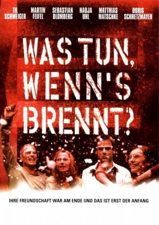

#2535 Was tun, wenn's brennt?
Alternativ: What to Do in Case of Fire (Originaltitel)
 
 IMDB-Wertung: 6.9 / 10
IMDB-Wertung: 6.9 / 10  Metascore: 47
Metascore: 47 
13 Jahre ist es her, seit Tim (Til Schweiger), Flo (Doris Schretzmeyer), Maik (Sebastian Bromberg), Hotte(Martin Feifel), Nele (Nadja Uhl) und Terror (Matthias Matschke) in der Hausbesetzerszene von Berlin aktiv waren und dem Establishment in kreativer Anarchie den gestreckten Mittelfinger entgegenreckten. Inzwischen sind fast alle ihren Idealen von damals untreu, einige sogar selbst Teil des einst so verhassten Establishments geworden. Als ein längst vergessener Sprengsatz, den sie einst in einer verlassenen Villa im Grunewald deponiert hatten, unerwartet explodiert, müssen sich die Sechs notgedrungen wieder mit ihrer verdrängten Vergangenheit und verlorenen Werten auseinandersetzen...
Jahr: 2001
Dauer: 101 Minuten
FSK: 12
Land: Deutschland Studio: Columbia TriStar Home EntertainmentTonspuren:
Untertitel:
Auflösung: 720p (1280x536) Größe: 2570 MB
Genre: Action, Komödie, Drama, Liebe, Thriller
Regisseur: Gregor Schnitzler
Drehbuch: Stefan Dähnert, Anne Wild
Soundtrack: Stephan Gade, Stephan Zacharias
Darsteller:
 Til Schweiger als Tim
Til Schweiger als Tim Sebastian Blomberg als Maik
Sebastian Blomberg als Maik Nadja Uhl als Nele
Nadja Uhl als Nele Matthias Matschke als Terror
Matthias Matschke als Terror Devid Striesow als Henkel
Devid Striesow als Henkel Sandra Nedeleff als Maklerin
Sandra Nedeleff als Maklerin- Frank Kusche als Polizist Schlafsaal
 Ralph Misske als Journalist Pressekonferenz
Ralph Misske als Journalist Pressekonferenz Martin Feifel als Hotte
Martin Feifel als Hotte- Doris Schretzmayer als Flo
 Klaus Löwitsch als Manowsky
Klaus Löwitsch als Manowsky- Barbara Philipp als Pritt
- Aykut Kayacik als Bülent
- Hubert Mulzer als Polizeipräsident
- Oliver Mommsen als Konrad
- This Maag als Schmitz
- Johanna von Halem als Assistentin Agentur
- Hanna Rudolph als Malerin
- Jamie Schuricht als Melli
- Tim-Owe Georgi als Staatssekretär
- Franz Gröning als Staatsanwalt
 Paula Paul als TV-Journalistin
Paula Paul als TV-Journalistin- Bernd Marszahn als Kaufhausdetektiv
- Torsten Buchsteiner als Taxifahrer
- Dieter Dost als 1. Einsatzleiter
- Gotthard Lange als 2. Einsatzleiter
- Monika Jones als Nachrichtensprecherin
- Shellye Broughton als Amerikanische Journalistin
- Matthias Schmidt als Polizist Ampel
- Eric Hamel als Junger Polizist
- Leandra Hoffmann als Baby Leander
- Lennard Württemberger als Baby Leander
- Ashley Kulig als Baby Leander
- Joelle Berge als Baby Leander
- Robert Mansfeld als Polizist , uncredited
- Frank Muche als Anwalt , uncredited
Datei: X:\2001\Was tun, wenn's brennt (2001, FSK12, 1280x536).mkv seit 19.11.2015
Festplatte: HD 1996-2002
 Es gibt insgesamt 102 Filme in der Gruppe '2001'
Es gibt insgesamt 102 Filme in der Gruppe '2001'